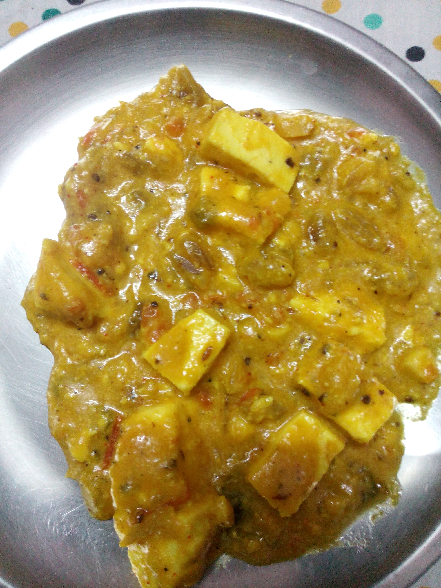

Shahi Paneer

The best Punjabi shahi paneer recipe! Deliciously flavorful, aromatic, rich, creamy, and restaurant-style paneer gravy. It will surely become your new favorite paneer dish at home!
Ingredients
- Paneer
- Butter
- Cream
- Onion
- Ginger
- Tomatoes
- Garlic
- Green chilli
- Cashew nuts
- Spices
- Turmeric
- Saffron
- Garam masala
- Black pepper
- Chilli powder
- Cumin
- Coriander
- Cloves
- Cinnamon
- Cardamoms
- Kasoori methi
- Cardamoms powder
- Salt
Steps
- Soak cashew nuts in hot water for 15-20 mins
- Warm up the heavy cream in the microwave for a few seconds. Take few saffron strands, crush and add to the warm cream. Mix and keep it aside. Over time saffron releases its flavor and color into the cream.
- Now take onion, ginger, garlic, green chili, cloves, cinnamon and cardamoms in a saucepan. Also, add ⅓ cup of water and turn the heat on medium. Let it cook for 8-10 minutes or till the onions become soft. Let it cool down.
- Now make three kinds of purees in the following order: First, make cashew paste. Then grind cooked onion into a fine paste and then grind roughly chopped tomatoes into a puree.
- Heat the ghee in a pan on medium heat. Once hot, add prepared onion paste.
- Cook with stirring occasionally till it comes thick. It may take around 5-6 minutes.
- Now add tomato puree and salt.
- Mix, cook till all the moisture evaporated and it becomes a thick paste. So stir in between and make sure that it is not sticking to the sides and bottom of the pan. If it is spluttering too much then you can partially cover the pan.
- Now add red chili powder, coriander powder, and black pepper powder. Mix well and cook for a minute.
- Now mix in cashew paste, water, and sugar.
- Simmer for 5-6 minutes. Do stir in between.
- Now add garam masala and kasoori methi (crushed between your palm). Mix well.
- Add paneer cubes. Mix and simmer for 1-2 minutes.
- Now add saffron-cream mixture. Mix and let it come to a simmer.
- Lastly, add cardamom powder and turn off the stove.
- Stir well and it is ready to serve.
To Home